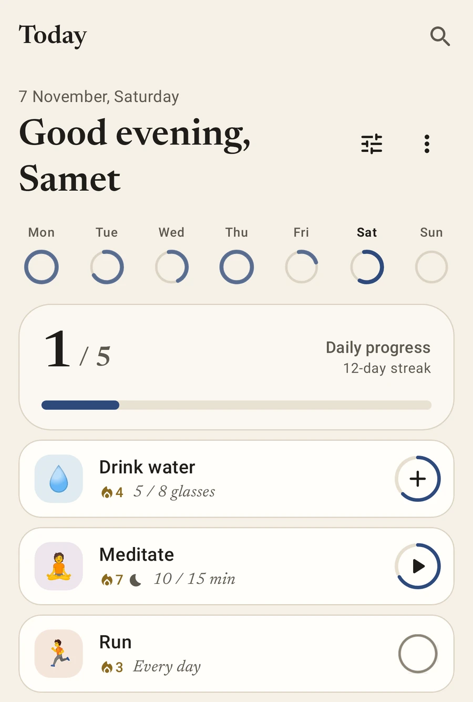
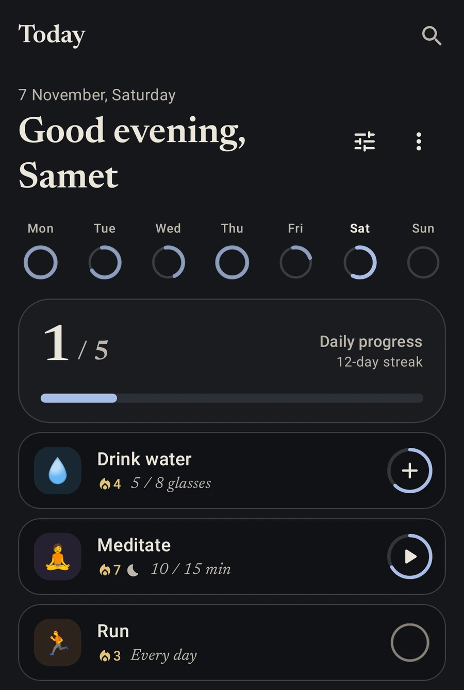
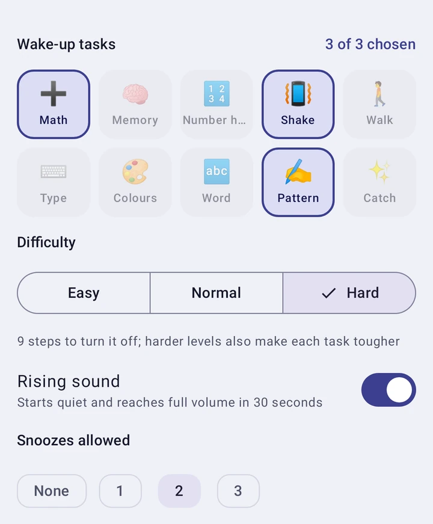
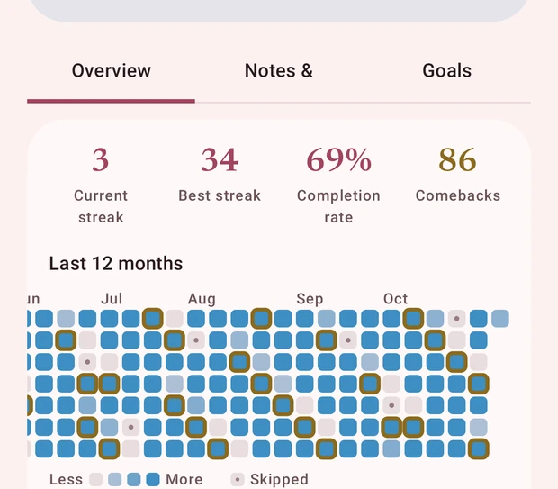
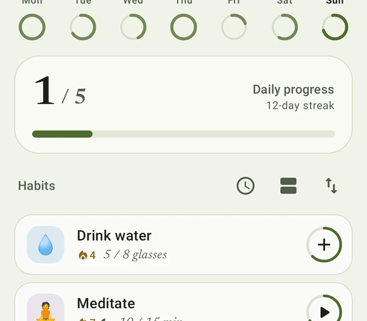
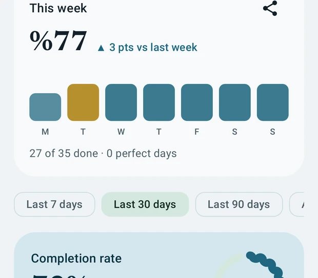
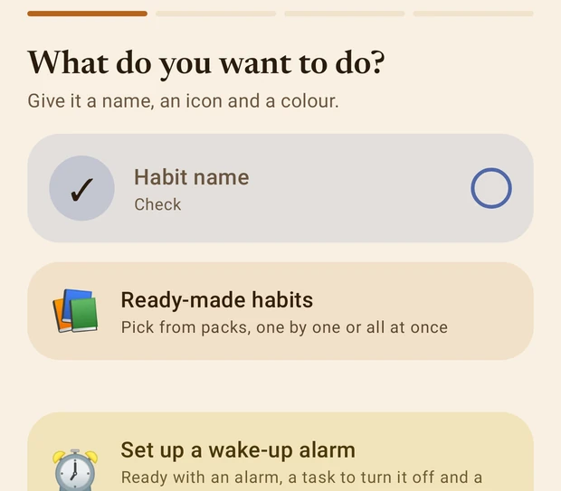
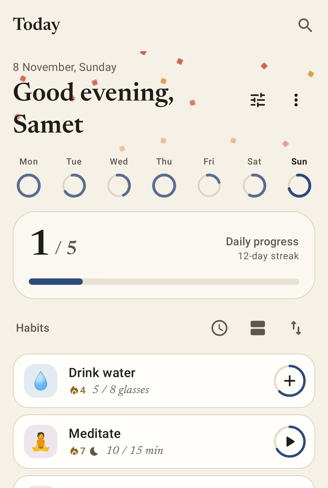

A small step still counts
Give every habit a bad-day version, like one page instead of thirty minutes. On a hard day, that keeps the streak alive.
金道 · the golden path
A calm habit tracker for Android, built around the day after you slip, not the perfect streak.
Free and open source · No ads · No tracking · Works offline


New in 2.9
A real alarm, new ways to track, and a timer that keeps counting with the app closed.

Most habit apps punish you when a streak breaks. Kinmichi helps you come back.
Give every habit a bad-day version, like one page instead of thirty minutes. On a hard day, that keeps the streak alive.
After a missed day, Today offers the small version in one tap. The day you come back is counted and drawn in gold.
Write when a habit happens. If-then plans are one of the best-proven ways to make a habit stick.
The app does the remembering, so you only do the habit.
Link a habit to steps, distance, calories, exercise or sleep, and it fills itself every time you open the app.
Usually run at 07:40 but the reminder rings at 21:00? Kinmichi notices and suggests a better time.
One evening note, only when a streak of three days or more is about to break. Nothing else.
Rarely hitting a target? Start from what you really do. Hitting it every day? Raise the bar. Daily too much? Make it three times a week.
After a habit, one tap on a face. Over time you see which habits you enjoy and which feel hard.
Continue with Google or GitHub to back up and move to a new phone, or start as a guest. No password either way.
Today, your progress, a year of every habit, and adding a habit step by step.




Each with a light and a dark side, or your wallpaper colours. Editorial serif type, and pure black at night if you like it.

Eight widgets: Today, a single habit, this week, your streak, the next habit, a progress ring, a mini heatmap and a sunrise wake alarm. Add them straight from Settings; on Android 12 and up their boxes tick the moment you tap. A Wear OS tile and watch app mark habits from your wrist.
Everything lives on the device. Sign in with Google or GitHub only if you want backup and sync, and lock the app with a PIN or your fingerprint.
Not now, not later. There is nothing to sell.
No analytics, no third-party SDKs watching you.
MIT licensed. Read every line on GitHub. Privacy details.
Kinmichi is distributed on GitHub, not the Play Store. Obtainium keeps it up to date for you.
https://github.com/sametackgz41/kinmichi^(kinmichi|tsuzuku)-[0-9] so it picks the phone app, then install. Updates arrive automatically.Prefer doing it by hand? Download the APK from the latest release. The app also tells you when a new version is out.
Yes. No ads, no subscription, no paid tier. Kinmichi is open source under the MIT licence.
Staying on GitHub keeps the app independent and quick to update. Obtainium installs and updates it as smoothly as a store would.
On your phone, in a local database. Backups are files you save yourself. Sync with Google or GitHub is optional and off until you sign in.
Not yet. Kinmichi is Android only for now, with an optional Wear OS watch app.
Report a bug or share an idea in GitHub issues, or translate it into your language.
金道 · the golden path
Free, open source and works offline. Install it in a minute, and let the app do the remembering.